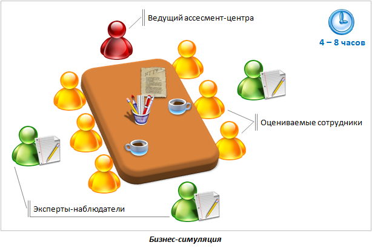
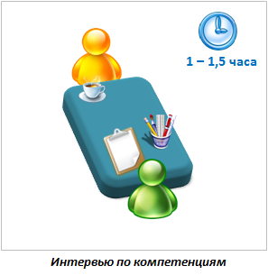
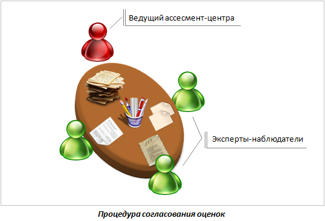
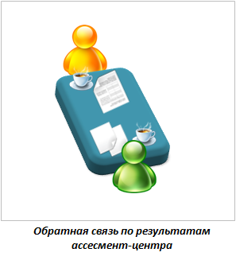

Ассессмент-центр -
технология точной оценки
Ассесcмент-центр (assessment centre, центр оценки) - это метод комплексной оценки персонала, основанный на моделировании ключевых моментов деятельности сотрудников. Участники решают задачи и работают в ситуациях, которые максимально соответствуют требованиям к их текущей позиции или позиции, на которую они рассматриваются (например, при оценке внешних кандидатов или отборе в кадровый резерв).
Цели и задачи ассессмента:
-
Достоверно оценить уровень компетентности специалистов и руководителей компании;
-
Выявить высокопотенциальных и перспективных сотрудников для дальнейшего целенаправленного развития и карьерного продвижения;
-
Организовать эффективный подбор персонала и точную расстановку кадров внутри компании;
-
Разработать индивидуальные планы развития сотрудников, в полной мере учитывающие их сильные стороны и зоны развития;
-
Повысить эффективность корпоративных программ обучения и развития персонала.
Технология ассессмент-центра появилась в годы Второй Мировой войны на Западе. Первоначально ассессмент использовался в британской армии для набора офицерского состава, а затем в Соединенных Штатах при подборе разведчиков. Впоследствии методика ассессмента была адаптирована для бизнеса и впервые применена в таких компаниях как IT&T, IBM, Xerox, Mars, Siemens, Nestle, Shell и других. На сегодняшний день практически каждая крупная западная компания использует ассессмент для оценки персонала.
В России данная технология начала применяться вначале 90-х годов ХХ века. Среди отечественных компаний, которые первыми стали использовать ассессмент-центр для оценки сотрудников были крупнейшие нефтегазовые компании Роснефть, Лукойл, ТНК-ВР, Газпром, представители банковского сектора - Альфа-Банк, Уралсиб, ритейлеры - М.Видео, Связной. В настоящее время ассессмент широко применяется в российских компаниях, зарекомендовав себя как надежный и достоверный метод оценки кандидатов и сотрудников.
При этом важно помнить, что точность оценки с помощью ассессмента напрямую зависит от правильности применения данного метода на всех этапах диагностики.
В структуру ассессмент-центра входят следующие методы оценки:
- Бизнес-симуляция (представляет собой несколько взаимосвязанных оценочных заданий – индивидуальных, парных и командных, объединенных одним сюжетным контекстом и моделирующих различные рабочие ситуации);
- Аналитический бизнес-кейс (индивидуальное письменное задание);
- Специализированные тесты и опросники (как правило, это тесты интеллектуальных способностей и личностные опросники);
- Интервью по компетенциям.
Участники ассессмент-центра
В классическом ассессмент-центре есть три категории участников:
-
Оцениваемые сотрудники
Действующие сотрудники компании или кандидаты. Оптимальное количество: 8-12 человек.
-
Ведущий ассессмент-центра
Сотрудник HR-службы компании или приглашенный консультант, который организует проведение центра оценки, дает участникам инструкции к упражнениям, отслеживает соблюдение рабочих регламентов и процедур. Зачастую ведущий также управляет процедурой согласования итоговых оценок по результатам ассессмента.
-
Эксперты-наблюдатели
Сотрудники компании или приглашенные консультанты, профессионально владеющие технологией ассессмент-центра. В их компетенцию входит наблюдение за оцениваемыми сотрудниками в ходе ассессмента и фиксирование особенностей их поведения при выполнении заданий. Количество наблюдателей рассчитывается по соотношению: 1 наблюдатель на 2 оцениваемых участника.
Основные принципы ассессмент-центра
Для обеспечения объективности оценки и получения достоверных результатов, необходимо соблюдать ряд принципов, на которых построен качественный и надежный ассессмент-центр:
-
Целостность оценки
Каждый участник в ходе ассессмента оценивается несколькими экспертами-наблюдателями, что позволяет составить целостный и объективный профиль компетенций сотрудника.
-
Независимость оценки
Эксперты-наблюдатели должны быть специалистами, не заинтересованными в результатах ассессмента. Это позволяет обеспечить непредвзятость диагностики и объективность результатов. Одним из вариантов является приглашение внешних консультантов, которые не знакомы с оцениваемыми сотрудниками и находятся вне политики компании-заказчика.
-
Чёткость критериев оценки
На этапе разработки ассессмента важно определить, какие именно качества, знания и навыки будут оцениваться, а также по каким критериям будет производиться эта оценка. Зачастую в качестве основы для оценки используются корпоративные модели компетенций, а в качестве критериев выступают четко определенные поведенческие индикаторы, отражающие уровень владения сотрудником каждой компетенцией.
-
Равные возможности для участников
В ходе ассессмент-центра все оцениваемые сотрудники находятся в равных условиях и имеют одинаковые возможности для проявления своих способностей.
-
Объект оценки - поведение участников
В ассессменте оценивается только наблюдаемое поведение участников, а не причины, которые за ним стоят. Благодаря этому, центр оценки позволяет чётко увидеть и понять, КАК человек действует в определенных рабочих ситуациях и НАСКОЛЬКО он при этом ЭФФЕКТИВЕН.
Структура ассессмент-центра
Ассессмент-центр разрабатывается с учётом специфики бизнеса организации и особенностей деятельности оцениваемых сотрудников. Результатом разработки центра оценки является подготовка четырёх основных инструментов: бизнес-симуляции, аналитического кейса, набора специальных тестов и структуры индивидуальных интервью. Подробнее о каждом из методов:
Бизнес-симуляция
Бизнес-симуляция занимает основную часть времени ассессмент-центра. В ходе бизнес-симуляции участникам обычно предлагается «прожить» ряд событий в компании, которая по своему описанию и характеристикам похожа на их собственную. За отведенное время сотрудникам необходимо решить различные по уровню сложности и масштабности проблемы и задачи в «новой» компании.
Примеры заданий бизнес-симуляции, которые требуется выполнить участникам: разработать план работ по проекту, просчитать бюджет и ресурсы, адаптироваться к непредвиденным изменениям, провести беседу с «трудным» подчиненным или клиентом и т.п. Каждое из заданий направлено на оценку одной или нескольких компетенций (например, способности принимать взвешенные решения, умения организовывать работу исполнителей, навыков влияния и убеждения и др.)
В ходе бизнес-симуляции обычно используется следующие типы оценочных заданий:
- индивидуальные задания;
- парные ролевые задания;
- командные задания.

Аналитический бизнес-кейс
Бизнес-кейс представляет собой многостраничный документ, в котором содержится информация для анализа и выработки решения. Например, бизнес-кейс может выглядеть как описание вымышленной организации, структура и бизнес-процессы которой похожи на те, в которых работают участники. Помимо описания ситуации, в кейсе обязательно должна быть сформулирована проблема, которую требуется решить. Для этого участник должен проанализировать имеющиеся вводные и принять обоснованное решение, а также составить план действий по его реализации. Нередко в конце кейса участнику предлагается также ответить на ряд вопросов, касающихся выполненного задания.
Сложность бизнес-кейса зависит от организационного уровня участников и задач центра оценки. С помощью аналитического кейса оцениваются такие компетенции как системное, коммерческое и стратегическое мышление, навыки принятия обоснованных и взвешенных решений. Как правило, оценочный кейс включается в качестве одного из индивидуальных заданий в бизнес-симуляцию.
Разработка аналитического кейса - кропотливая и ответственная задача. Важно не только глубоко понимать специфику бизнеса, но и правильно настроить механику кейса, заложить корректные исходные данные, исключить ошибки и неточности в расчётах. Для начинающих ассессоров рекомендуется использовать готовые разработки, дорабатывая их под собственные нужды.
Тесты и опросники
Наряду с интерактивными и аналитическими заданиями, в центре оценки часто используются стандартизированные тесты и опросники. Обычно их количество не превышает 1-2 и, как правило, они направлены на выявление уровня формально-логического интеллекта, организаторских и специальных способностей, особенностей типа личности и умения работать с информацией.
Среди наиболее популярных тестовых методик, используемых в ассессмент-центрах, можно назвать:
- батареи тестов SHL;
- личностный опросник CPI;
- кейс-тест на определение стиля руководства;
- организационный тест.
Тесты и опросники рекомендуется использовать в качестве вспомогательных инструментов центра оценки. Основной источник информации о компетенциях участника - наблюдаемое поведение.
Интервью по компетенциям
Интервью по компетенциям (поведенческое интервью) проводится в конце центра оценки и служит для сбора дополнительной информации об уровне развития компетенций участников. Формат интервью - «один на один» (участник и наблюдатель-эксперт).
В ходе интервью ассессор задаёт участнику вопросы, касающиеся его реального рабочего опыта, в которых могли проявляться оцениваемые компетенции. Оценки, полученные в ходе интервью, учитываются при обработке результатов центра оценки. Средняя продолжительность интервью по компетенциям составляет 1-1,5 часа.

После завершения основной части центра оценки проводится процедура обсуждения и согласования результатов наблюдения.
В обсуждении принимает участие ведущий ассессмента и эксперты-наблюдатели, которые сопоставляют свои наблюдения по каждому участнику и коллегиально определяют уровень развития его компетенций, а также потенциал развития.
Для обоснования выставленных оценок наблюдатели используют свои записи и оценочные чек-листы, приводя примеры конкретных действий участника в том или ином упражнении.

Итогом работы экспертов становится персональный отчёт по каждому участнику оценки, в котором подробно описываются его сильные стороны и области, требующие дальнейшего развития. Как правило, персональный отчет выдаётся на руки участнику оценки, а также его руководителю.
Результаты каждого участника ассессмента обсуждаются на индивидуальной встрече с экспертом-наблюдателем. Данная встреча проходит в формате обратной связи и призвана решить две ключевые задачи:
-
Информирование
В ходе обратной связи наблюдатель информирует участника о его персональных результатах прохождения центра оценки, помогает понять своих сильные стороны и зоны развития. Важно обязательно разъяснить участнику критерии, по которым производилась оценка, и уточнить, как оцениваемые качества (компетенции) влияют на эффективность работы сотрудника.
-
Мотивирование
Помимо информирования о результатах оценки, наблюдателю важно замотивировать участника на развитие «отстающих» компетенций. Для этого эксперт не только даёт практические рекомендации по развитию выбранных качеств, но и побуждает участника самого искать способы достижения поставленных целей.

Продолжительность сессии обратной связи по результатам ассессмента составляет 1 – 1,5 часа. Нередко, после обсуждения результатов оценки, сотруднику оказывается помощь в составлении индивидуального плана развития. Эксперт также может порекомендовать участнику оптимальные методы развития компетенций.
Заказчику (собственнику бизнеса или руководителю подразделения) также предоставляются подробные результаты ассессмент-центра в виде индивидуальных отчетов по каждому участнику и консолидированных оценок по группе оцениваемых сотрудников (например, в формате интерактивного дашборда).
Автор материала: Беспалов Игорь Александрович ©
Ассессмент-центр - эффективная и сложная технология. Тем не менее, её можно освоить, используя качественные и проработанные обучащие материалы.
По статистике 97% наших покупателей успешно осваивают технологию ассессмент-центра в течение 3-х месяцев. Мы всегда рады помочь нашим клиентам и покупателям при возникновении вопросов. В течение 6 месяцев после приобретения наших материалов консультации предоставляются бесплатно.
Вы можете заказать разработку ассессмент-центра для вашей компании «под ключ» или самостоятельно научиться проектировать и проводить центры оценки, используя наши обучающие материалы:


наверх
наверх ▲